오늘의 과제

박사오늘은 틀린 그림만 본다. 어디서 처음 틀렸는지 찾는 게 목표다.

주판봇보이는 대로 고치면 됩니다! 눈이 이상하면 눈을!

초파리 연구원눈이 이상한 원인이 윤곽일 수도 있어. 큰 것부터 순서대로 보자.

X2점검표 다섯 항목으로 채점하겠습니다.
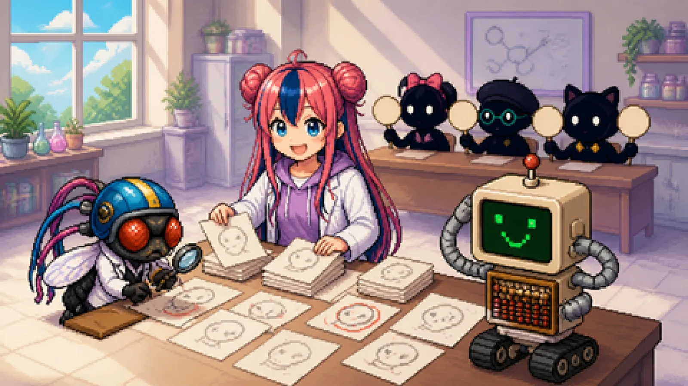
일부러 틀린 얼굴 여덟 장을 모았습니다. 점검표 다섯 항목 중 어디서 처음 걸리는지 찾고, 고치는 문장 조각을 확인합니다.
그림 실력·코드·수식을 몰라도 됩니다. 실험을 눌러 보며 따라오세요.
① 큰 틀(원·장기말·옆 상자) → ② 높이 기준선 → ③ 눈 상자·간격 → ④ 코·입·귀 → ⑤ 목·어깨 잇기
옷 치수가 안 맞으면 단추 위치보다 어깨 너비를 먼저 봅니다.
작화 수정 지시도 '윤곽 → 비율 → 부위' 순서로 적습니다. 순서가 바뀌면 고친 부위를 다시 고치는 일이 생깁니다.


실패마다 처음 걸리는 항목이 다릅니다. 처음 걸린 곳부터 고칩니다.
큰 틀(①)에서 걸린 실패는 부위를 고쳐도 낫지 않습니다.
점검표 순서는 1~4부의 순서와 같습니다. 막히면 해당 부로 돌아갑니다.
AI 얼굴이 어딘가 어색한데 어디가 틀렸는지 모르겠습니다.
점검표 다섯 항목을 위에서부터 봅니다. 그림 위에 머리 크기 원과 가로 기준선을 그어 보면 대부분 ①·②에서 원인이 보입니다.
그림마다 증상을 보고 처음 걸리는 점검 항목을 고른 뒤, 연결된 원리와 고치는 프롬프트 조각을 확인합니다.
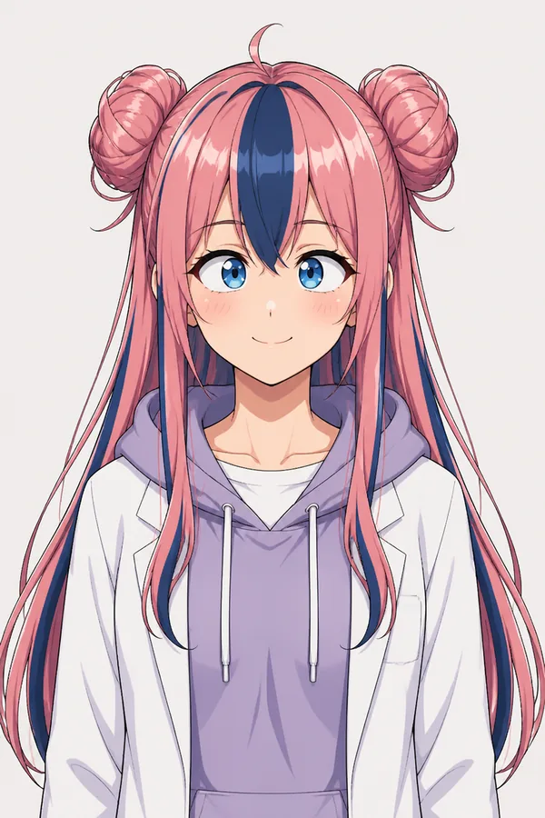
증상두 눈이 코 쪽으로 몰려 사시처럼 보입니다.
연결된 원리1부 3단계 눈 상자
eyes spaced slightly more than one eye width apart, symmetrical eye boxes on the eye line
그림에서는 눈 사이 간격보다 눈동자가 코 쪽으로 쏠린 모양으로 나왔습니다. 어느 쪽이든 눈 상자 안에서 눈이 가운데로 몰린 것이라 ③에서 걸립니다.
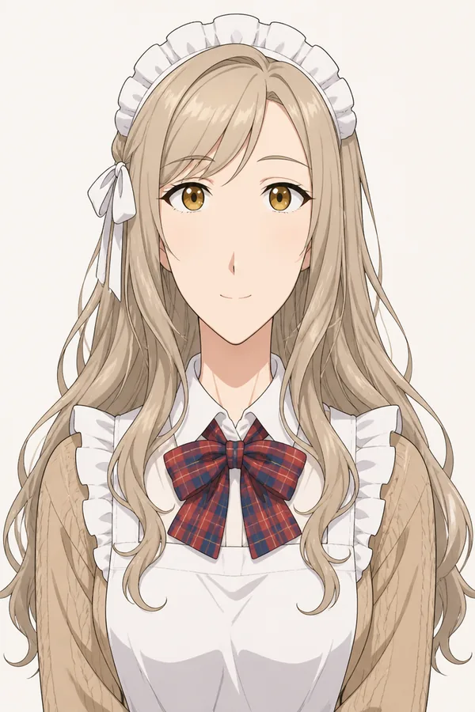
증상이마는 좁고 눈~코 사이가 길어 얼굴이 늘어져 보입니다.
연결된 원리1부 1단계 기준선
upper eyelids at half the head height, features placed slightly lower, compact midface
그림에서 모아의 리본이 오른쪽 귀 위로 잘못 그려졌습니다(고정값은 왼쪽 귀). 실패 원인과는 관계없는 도구의 실수입니다.
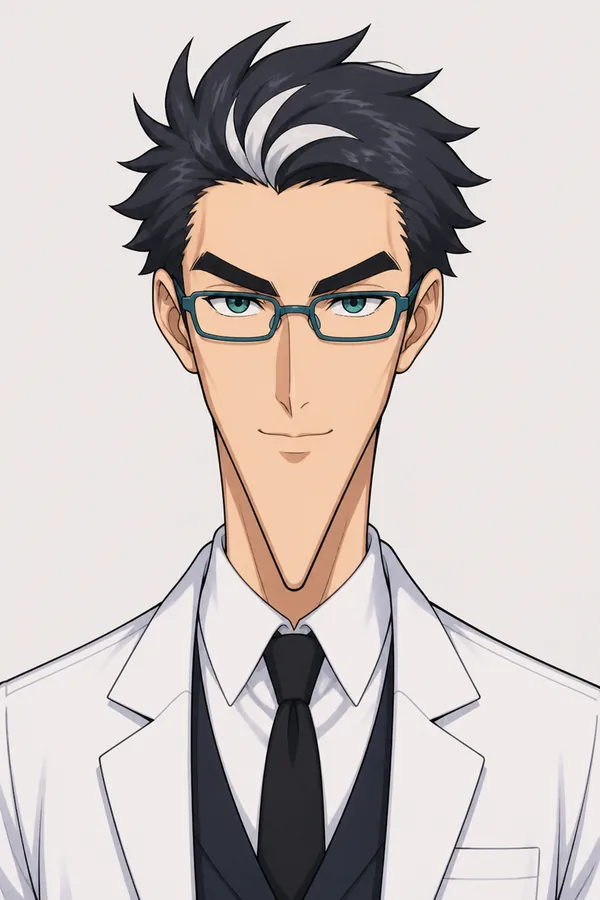
증상남성 얼굴의 턱이 뾰족하고 얼굴이 지나치게 깁니다.
연결된 원리2부 1단계 장기말
defined angular jaw with a square chin tip, face length about 1.6 times its width
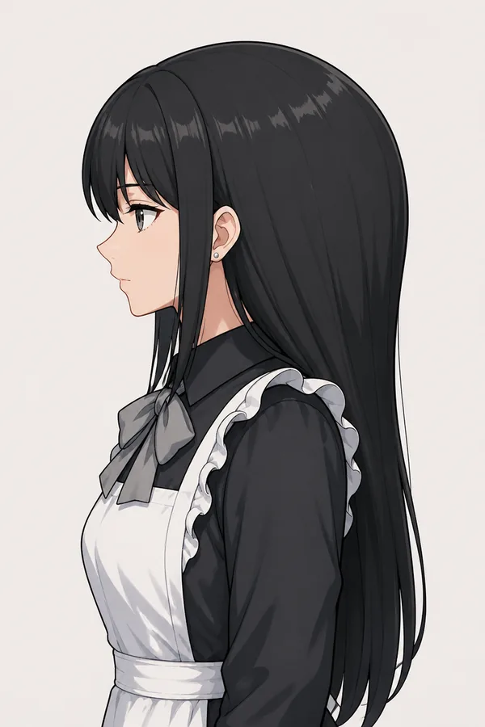
증상옆얼굴의 머리가 뒤로 크게 부풀어 둔해 보입니다.
연결된 원리4부 4단계 옆얼굴 점검
compact rounded back of the head, side profile
그림 도구가 실수를 일부 고쳐 그려 뒤통수가 약간만 부풀었습니다. 결과는 매번 다르니 직접 확인하고, 크게 부푼 모습은 4부 4단계 실험에서 뒤통수 막대를 올려 보세요.
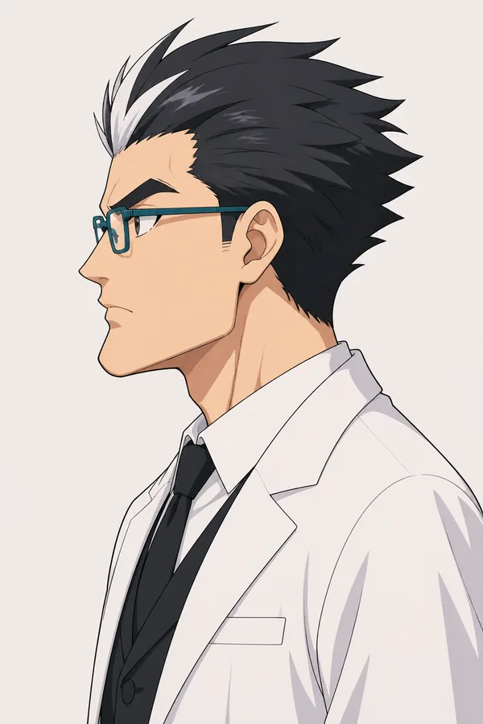
증상목이 가는 옆얼굴인데 턱이 앞으로 튀어나와 보입니다.
연결된 원리4부 4단계 옆얼굴 점검
chin slightly tucked in, side profile
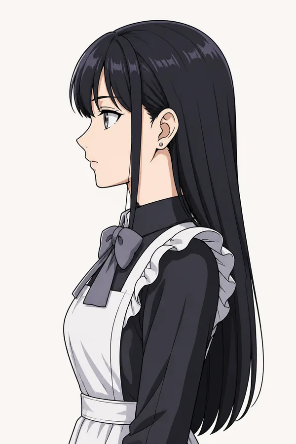
증상옆얼굴에서 머리와 목이 직선으로 꺾여 붙어 인형 같습니다.
연결된 원리3부 4단계 목
neck tilted forward about five degrees, smooth curves from jaw to neck and from nape to back
목은 꼿꼿하게 섰지만, 머리와 목이 이어지는 곳은 도구가 비교적 자연스럽게 고쳐 그려 실패가 약하게 나왔습니다. 직선으로 꺾인 목은 3부 4단계 실험에서 '곡선으로 잇기'를 끄고 보세요.
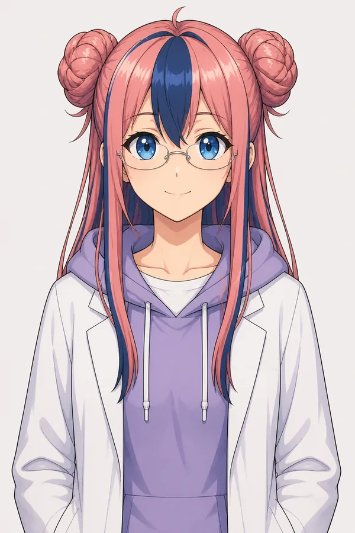
증상안경을 씌웠더니 테 선이 눈동자 한가운데를 지납니다.
연결된 원리4부 2단계 안경
large rectangular rims that do not cross the eyes, or under-rim glasses with no top frame
그림 도구가 실수를 고쳐 그려 이 실패는 재현되지 않았습니다(테가 눈 바깥을 둘러 눈동자를 가리지 않음). 결과는 매번 다르니 직접 확인하고, 테가 눈을 가로지르는 모습은 4부 2단계 실험에서 림 높이를 80으로 내려 보세요.
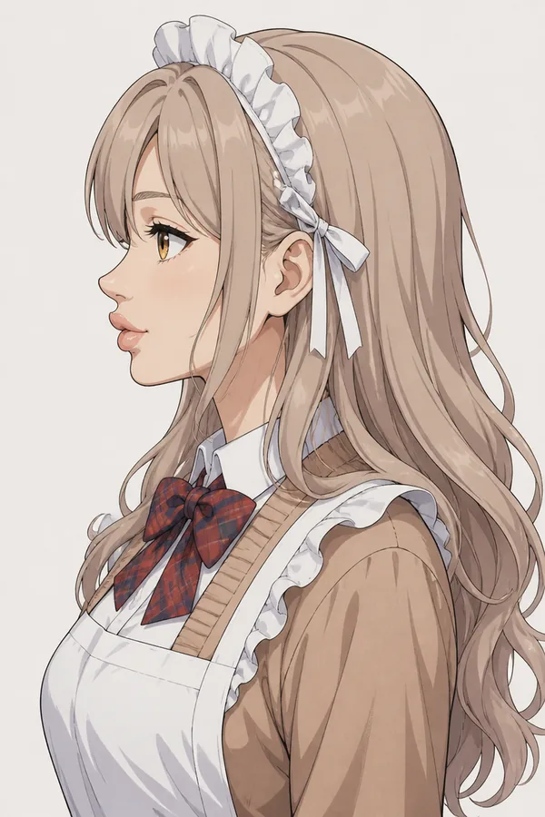
증상애니풍 여성 옆얼굴의 입 주변이 앞으로 불룩합니다.
연결된 원리3부 3단계 굴곡
simplified lips in profile, small upturned nose, soft chin
이 그림은 실패가 잘 재현되었습니다. 같은 모습은 3부 3단계 실험에서 입술 막대를 올려도 볼 수 있습니다.
얼굴에는 나이를 읽게 하는 신호가 몇 가지 있습니다. 볼이 낮고 둥근 윤곽, 아주 큰 눈, 낮은 부위 위치, 짧은 목, 머리카락으로 가린 턱선이 겹치면 실제보다 어려 보입니다.
AI에게 '귀여운', '앳된' 같은 말을 넣거나, 이런 신호를 여러 개 겹쳐 요청하면 성인 캐릭터가 어린아이처럼 그려지는 쪽으로 쏠리기도 합니다. 이 시리즈는 이런 그림을 만들지 않습니다.
막는 법: ① 성인 나이를 숫자로 적습니다(예: in their late twenties). ② 성인 비율을 적습니다(adult proportions, neck and shoulders of an adult). ③ 신호를 한두 개만 씁니다 — 큰 눈을 원하면 윤곽은 갸름하게. ④ 학교 옷 이름 대신 옷의 소재·모양을 적습니다. ⑤ 결과가 어려 보이면 쓰지 않고 다시 만듭니다.
연결된 원리5부 1단계 얼굴 문장 · 1부 2단계 볼 높이
이 부에서 배운 원리를 그림 생성 AI(Genspark 등)로 직접 확인합니다. A는 이 페이지 그림을 실제로 만든 프롬프트, B는 원리를 하나 빼거나 바꾼 비교용 문장입니다.
참고 그림 내려받기: haru_anime_base · sia_anime_base · moa_anime_base · haru_sheet · sia_sheet · moa_sheet · doctor_sheet · fruitfly_sprites_6 · jupanbot_ref_genspark_v0 · pixel_style_ref_prev_cover
실패 그림 f1을 고치는 문장 조각으로 다시 만들어, 진단이 맞았는지 확인합니다.
첨부: 해당 캐릭터의 refs/*_anime_base.png 또는 *_sheet.png
Illustration, vertical 2:3. Art style: high-quality anime illustration, clean confident lineart, two-tone cel shading, natural adult proportions. Match the attached reference images exactly (face, hair, colors, accessories). All characters are adults in their twenties (the Professor is an adult man in his thirties); modest outfits exactly as described. This is an intentional FAILURE example for a teaching page: draw the mistake described below clearly and convincingly, while everything else stays correct. Front-view chest-up portrait of Haru (adult lab assistant, long straight pink hair with navy streaks and a thick navy streak down the center of the bangs, two round hair buns on top, small ahoge, big blue eyes), wearing lavender hoodie with white drawstrings over a white t-shirt, open white knee-length lab coat. Intentional mistake: the two eyes are placed far too close together — the gap between them is clearly narrower than one eye width — so she looks cross-eyed. Plain off-white studio background. No text, no letters, no numbers, no logos, no watermark, no revealing clothing, not childlike, no school uniform, not resembling any famous anime character.
Use the image edit / inpainting tool. Paint over only the eyes and eyebrows (not the hair). Prompt: eyes spaced slightly more than one eye width apart, symmetrical eye boxes on the eye line. Keep everything else unchanged.
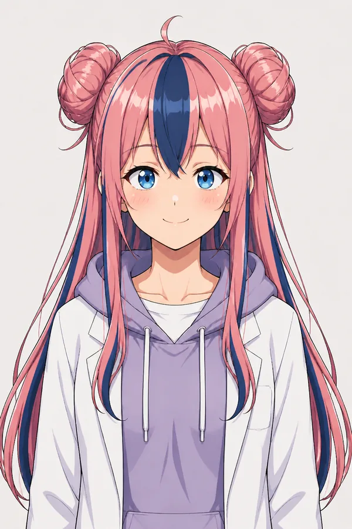
실제 결과: 눈·눈썹만 부분 수정하니 머리와 윤곽은 그대로 두고 눈동자가 가운데로 돌아와 몰린 느낌이 줄었습니다. 눈 사이 간격 자체는 거의 그대로입니다. f1의 몰린 눈이 간격보다 눈동자가 코 쪽으로 쏠린 모양으로 나왔기 때문입니다.
실패 그림 f7을 고치는 조각으로 다시 만들어 봅니다.
첨부: 해당 캐릭터의 refs/*_anime_base.png 또는 *_sheet.png
Illustration, vertical 2:3. Art style: high-quality anime illustration, clean confident lineart, two-tone cel shading, natural adult proportions. Match the attached reference images exactly (face, hair, colors, accessories). All characters are adults in their twenties (the Professor is an adult man in his thirties); modest outfits exactly as described. This is an intentional FAILURE example for a teaching page: draw the mistake described below clearly and convincingly, while everything else stays correct. Front-view chest-up portrait of Haru (adult lab assistant, long straight pink hair with navy streaks and a thick navy streak down the center of the bangs, two round hair buns on top, small ahoge, big blue eyes), wearing lavender hoodie with white drawstrings over a white t-shirt, open white knee-length lab coat, wearing glasses. Intentional mistake: the glasses have small thin rims placed so that the frame line crosses right through the middle of both irises, hiding the eyes. Plain off-white studio background. No text, no letters, no numbers, no logos, no watermark, no revealing clothing, not childlike, no school uniform, not resembling any famous anime character.
Same image, keep the same framing. Change only: replace the glasses with large rectangular under-rim glasses (no top frame) that do not cross the eyes.
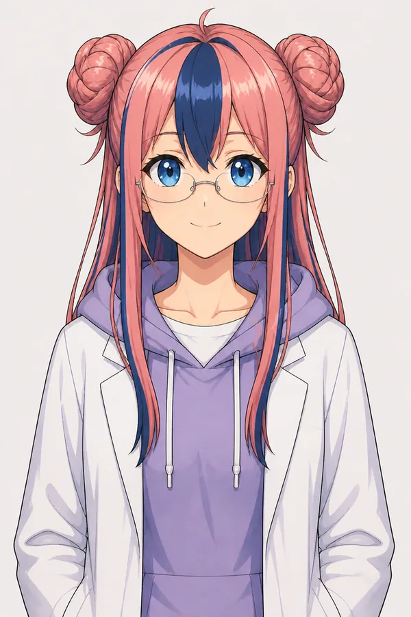
실제 결과: f7 그림부터 실패가 재현되지 않았고(테가 눈을 가리지 않음), 언더림으로 바꾸라고 한 B도 위 테가 남은 둥근 안경 그대로였습니다.
이 부의 원리를 내 손으로 프롬프트에 옮겨 보는 과제 두 개입니다. 과제마다 목표 → 순서 → 넣을 프롬프트 → 확인할 것 → 예상 결과 → 자주 생기는 문제 순서로 적었습니다. 예상 결과 그림은 아래 프롬프트로 실제로 만든 그림입니다. 요청과 다르게 나온 곳은 '실제 결과'에 그대로 적었습니다. 결과는 매번 조금씩 다르니, 그림이 똑같지 않아도 '확인할 것'이 맞으면 성공입니다.
목표6부 실패 그림 f3(뾰족한 턱)을 진단 순서대로 보고, 처음 걸린 항목(① 큰 틀)에 맞는 고치는 조각 한 문장으로 고칩니다.
왜 이 연습인가실패를 보면 여러 곳을 한꺼번에 고치고 싶어집니다. 진단 순서에서 처음 걸린 곳 하나만 고쳐야 무엇이 원인이었는지 알 수 있습니다.
첨부할 참고 그림: assets/img/f3_chin.webp(6부 실패 카드 f3 그림을 내려받아 첨부), refs/doctor_sheet.png — 참고 그림은 위 직접 만들어 보기에서 내려받을 수 있습니다.
Same character, same pose, framing, clothes and lighting as the attached image. Change only the face outline: shorten the lower face; a defined angular jaw with a square chin tip; face length about 1.6 times its width. Keep the eyes, glasses, eyebrows and hair unchanged. All characters are adults. No text, no letters, no numbers, no logos.
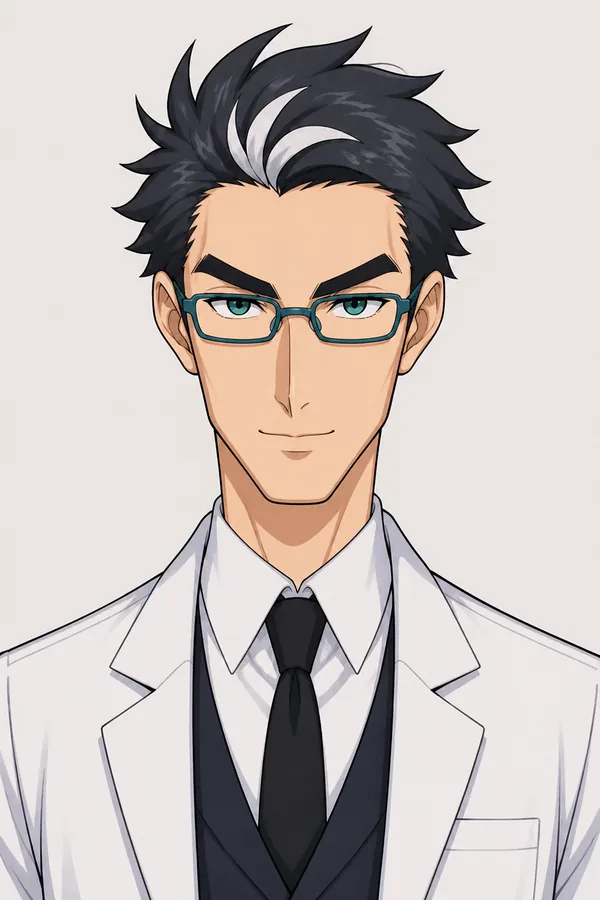
실제 결과: f3보다 아래 얼굴이 조금 짧아졌지만, 턱 끝은 여전히 좁고 뾰족해 '각진 턱'까지는 고쳐지지 않았습니다. 이럴 때는 턱 아래만 칠해 부분 수정하거나, 같은 대화에 'square chin tip, wider jaw'만 한 번 더 요청합니다.
| 문제 | 이렇게 고칩니다 |
|---|---|
| 얼굴 전체가 새로 그려졌다 | 첨부한 f3 그림을 기준으로 삼으라는 첫 문장을 지웠는지 봅니다. 부분 수정 기능으로 턱 아래만 칠해도 됩니다. |
| 턱이 너무 짧아 둥글다 | 'face length about 1.6 times its width'를 유지하고 'not round'를 덧붙입니다. |
| 안경이 바뀌었다 | 'keep the teal rectangular glasses exactly'를 덧붙입니다. |
더 해 보기같은 방법으로 f2(늘어진 가운데)를 진단하고, 이번에는 '② 높이 기준선'에 맞는 고치는 조각으로 고쳐 보세요.
목표둥근 볼·큰 눈처럼 앳된 신호를 쓰고 싶을 때, 성인 나이와 성인 비율을 함께 적어 모아를 20대 성인으로 받습니다.
왜 이 연습인가6부에서 본 것처럼 둥근 볼·아주 큰 눈·낮은 부위가 겹치면 성인 캐릭터가 어려 보이는 쪽으로 쏠립니다. 이 시리즈는 그런 그림을 만들지 않으므로, 처음부터 막는 문장을 연습합니다.
첨부할 참고 그림: refs/moa_anime_base.png, refs/moa_sheet.png — 참고 그림은 위 직접 만들어 보기에서 내려받을 수 있습니다.
Illustration, vertical 2:3. Art style: high-quality anime illustration, clean confident lineart, two-tone cel shading, natural adult proportions. Match the attached reference images exactly (face, hair, colors, accessories). All characters are adults in their twenties (the Professor is an adult man in his thirties); modest outfits exactly as described. An adult woman in her late twenties with adult proportions: Moa (adult maid intern, long ash-beige wavy hair, white frilled maid headband with a white ribbon over her LEFT ear, amber eyes), wearing camel knit cardigan over a white blouse, red and navy plaid bow tie, white frilled apron, working at a laptop at a desk, looking up with a warm smile. Age safeguards (important): adult face length with a defined chin, adult neck length and shoulder width, upper eyelids at half the head height; soft cheeks are fine but keep the jaw visible; large expressive eyes are fine but not oversized; mature, professional posture; modest clothing. Light from the upper left. Plain off-white studio background. No text, no letters, no numbers, no logos, no watermark, no revealing clothing, not childlike, no school uniform, not resembling any famous anime character.
실제 결과: 노트북 앞에서 웃는 모아가 20대 성인으로 나왔습니다. 볼은 부드럽지만 턱선이 보이고 목과 어깨가 성인 비율입니다. 나이·비율 문장을 맨 앞에 둔 방법이 통한 예입니다.
| 문제 | 이렇게 고칩니다 |
|---|---|
| 그래도 어려 보인다 | 그 그림은 쓰지 않습니다. 'large expressive eyes' 문장을 지우고 'slim oval face'로 바꿔 신호를 하나 줄입니다. |
| 교복처럼 보인다 | 리본 타이와 앞치마가 학교 옷처럼 보이면 'maid-style lab apron over a cardigan, office setting'으로 장소와 소재를 적습니다. |
| 노트북이 얼굴을 가린다 | 'laptop low on the desk, face fully visible'을 덧붙입니다. |
더 해 보기5부 1단계 얼굴 문장 실험에서 둥근 볼 + 큰 눈 + 낮은 부위를 고르고, '나이·금지'를 넣었다 뺐다 하며 경고가 어떻게 바뀌는지 보세요.

| 항목 | 주판봇 | 초파리 |
|---|---|---|
| 정답 수(8개 중) | 3 | 8 |
| 원리(첫 원인 찾기) | 3 | 9 |
| 자연스러움(고친 그림) | 5 | 8 |
| 합계 | 11 | 25 |


점수는 이야기 속 예시입니다. 실제 그림을 평가한 값이 아닙니다.
| 주제 | 한 줄 | 작업에서는 |
|---|---|---|
| 진단 순서 | 큰 틀 → 높이 기준선 → 눈 상자 → 코·입·귀 → 목·어깨 | 처음 걸린 곳부터 |
| 실패 8종 | 몰린 눈·늘어진 가운데·뾰족한 턱·부푼 뒤통수·튀어나온 턱·인형 목·눈 가린 안경·불룩한 입 | 고치는 조각을 문장에 더하기 |
| 나이 쏠림 | 둥근 볼·큰 눈·낮은 부위·짧은 목이 겹치면 어려 보임 | 성인 나이와 성인 비율을 적기 |
이 페이지에 나온 개념·방법·비유·쓰임을 모았습니다. 검색하고, "설명 보러 가기"로 본문에 돌아갑니다.
지식 색인을 출처와 함께 파일로 내려받습니다. 서지 관리는 BibTeX·RIS, 온톨로지 편집은 Turtle, 그래프 도구는 CSV, 여러 페이지 합치기는 kg.json입니다.